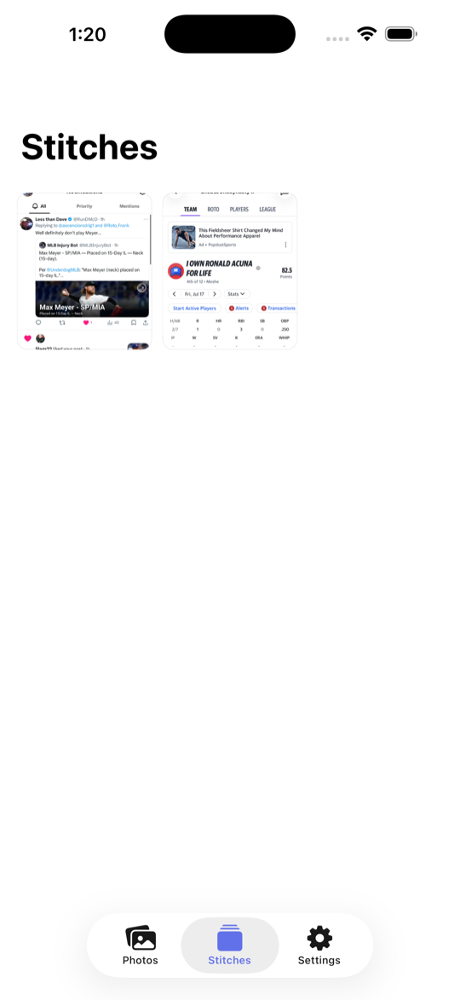
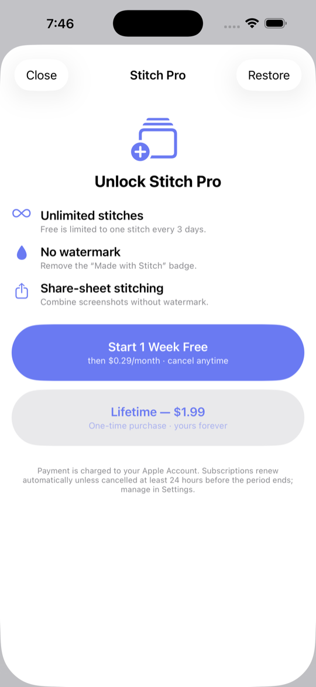
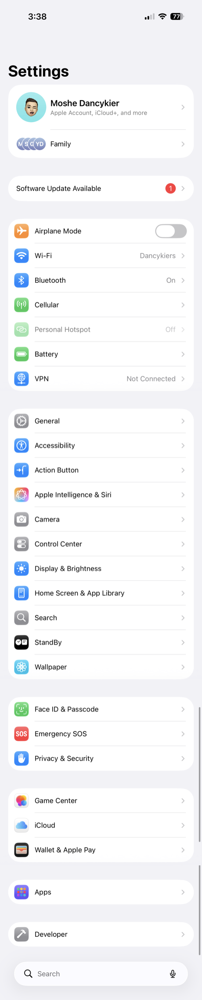
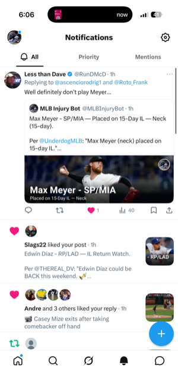
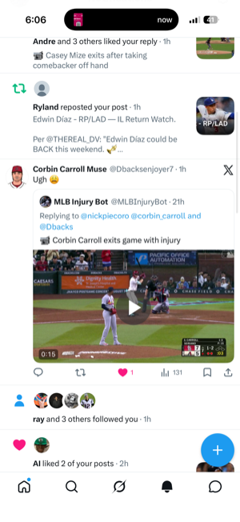
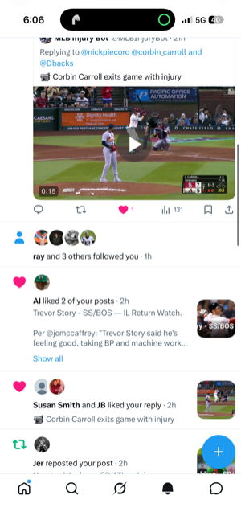
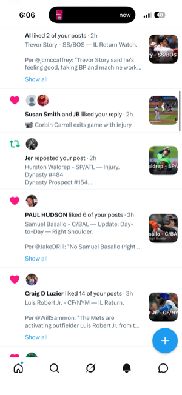
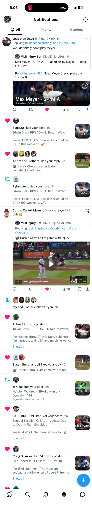
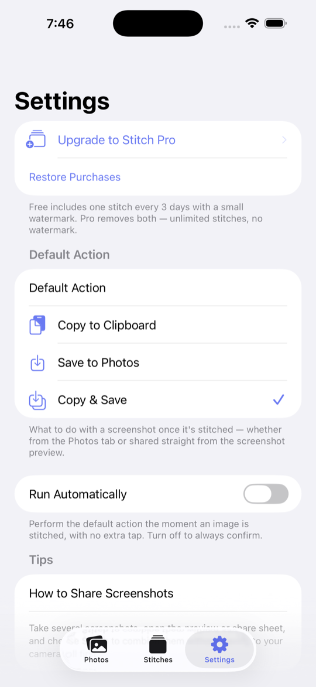

Take a few screenshots of a scrolling page and Stitch joins them into a single tall image — matching the content so the seams disappear and repeated bars show up only once.








Four screenshots — the blue + floats on every one.
How it works
Stitch matches the content between screenshots, trims the overlap, and detects floating buttons that repeat — keeping them a single time.
Screenshot a long page in a few overlapping shots — from Photos or the share sheet.
It locates the matching row between shots and cuts exactly there, so the join disappears.
A “+” or bar that sticks to the screen is detected and shown only once, not on every shot.
Why Stitch
Everything runs locally on your iPhone — fast, offline, and completely private.
Content‑matched seams mean the stitched image reads as one continuous screen.
Status bars, tab bars and floating buttons that repeat on every shot appear just once.
Send screenshots to Stitch straight from iOS — no need to save them first.
All processing happens on device in a moment. Nothing is uploaded.
Every stitch is kept in the app so you can revisit, copy or share it later.
No accounts, no analytics, no tracking. Your photos never leave your phone.
Screenshots
A clean home for your screenshots, your saved stitches, and everything Pro.
One stitched image
Saved stitches

Settings
Stitch Pro
Pricing
Do your first stitches free — upgrade for unlimited, watermark‑free results.
Free to try, private by design, and always on device.
Get Stitch on the App Store